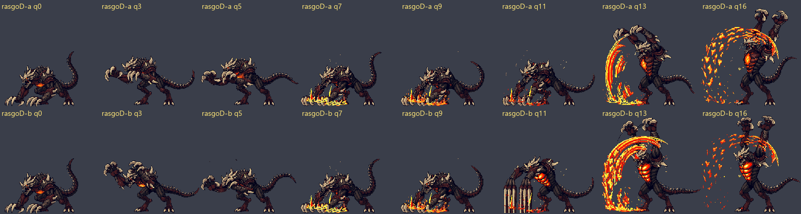
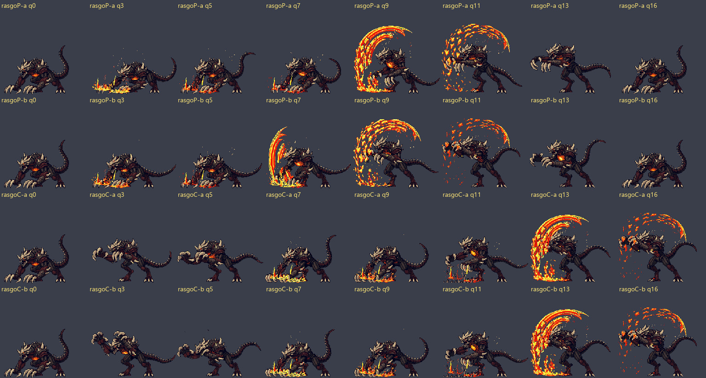
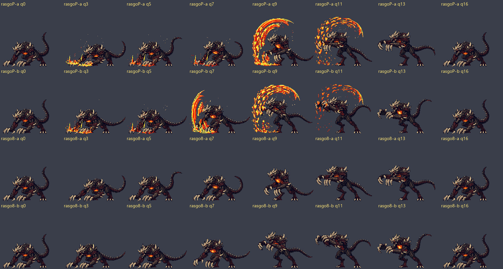
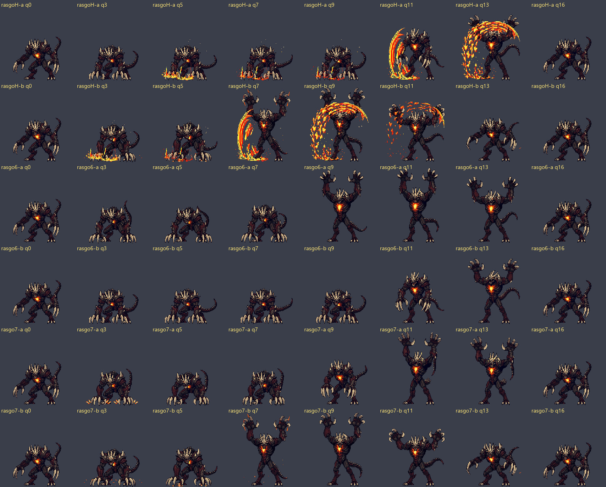
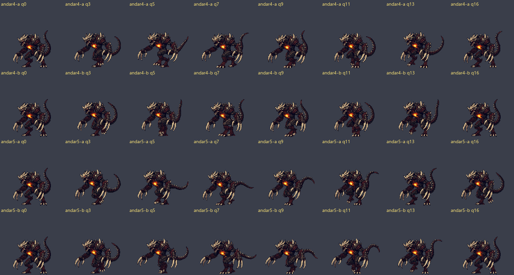
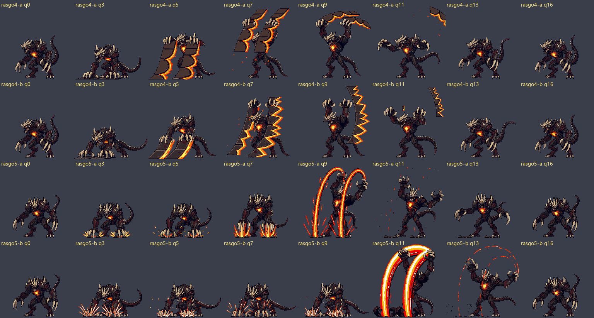
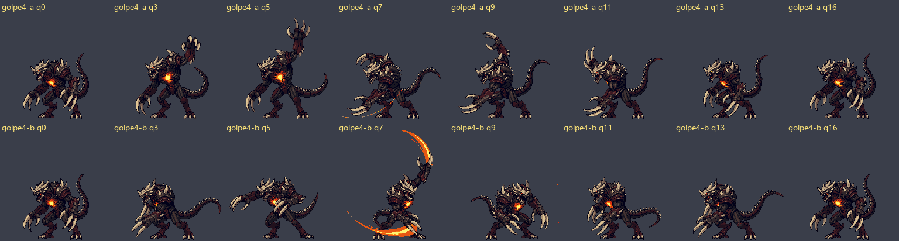
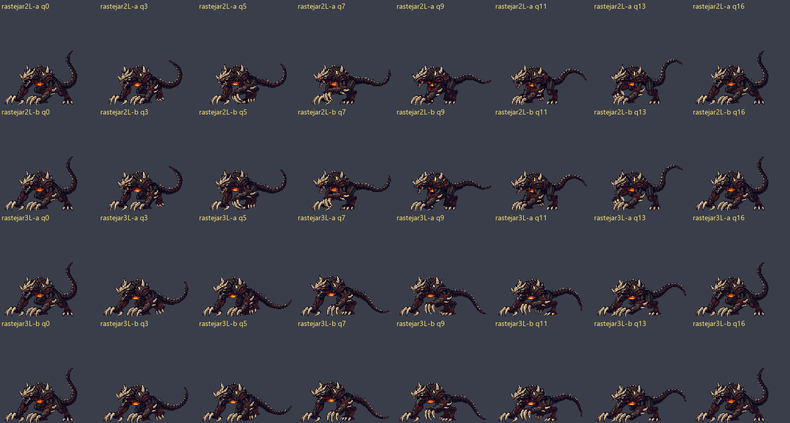
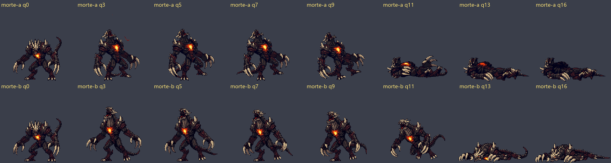
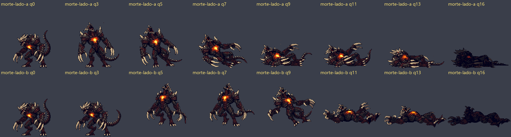

25/11. O que você pediu para refazer na revisão do passo3.html e o que ainda não tinha sido feito. Custo desta rodada: 44 gerações.
Como ler os GIFs: como no passo3. HOJE é o clipe do jogo, ESCOLHA é a que você escolheu e NOVA é a candidata desta rodada, com os pés no mesmo chão e o mesmo tempo total.
O passo 3 fechou em 25/11. Todos os clipes estão escolhidos (tabela em As suas escolhas). Por último ficaram descola-a + agarra-a e rasgoD-a.
Rodada 8: o rasgo até em cima e o salto saindo da parede
25/11. Esta rodada custou 10 gerações.
O rasgo: o braço vai até em cima
O seu ponto: no rasgo original, o braço e as garras fazem o movimento completo, do chão até bem acima da cabeça, e o arco é esse caminho. Na rasgoC os braços paravam à frente, na altura do peito. Agora o trecho de arrancar parte das garras enterradas e leva os dois braços para a frente e para cima até ficarem retos acima da cabeça, de perfil e com o core visível de lado. Depois vem um trecho novo de volta, dos braços no alto até a pose do galope. A ordem é: crava (8 quadros), sobe até em cima (8) e desce (8), 25 quadros no total. O arco de hoje acompanha a subida.
rasgoD-a: crava com as garras à frente da cara, arrasta e sobe. O arco acende quando os braços passam da altura da cabeça.
rasgoD-b: começa a arrancar um quadro antes e marca os riscos das garras no arranque.
Nos quadros do alto ela está de pé, de perfil, com os braços acima da cabeça. A cara fica de três quartos, mas o peito não vira para a tela.
Os quadros em 256²

O salto de parede a parede, saindo da parede
São dois trechos de 8 quadros, presos nas poses de verdade:
descola: agarrada na parede da direita, ela empurra com as quatro patas e se estica no voo. Termina no quadro do corpo esticado da salto-parede-b, que você escolheu.
agarra: esticada, chega na parede da esquerda, crava as garras e o corpo gira para cima até ficar agarrada.
No meio, o motor leva o quadro esticado de uma parede à outra a 380 px/s, como diz a spec. O GIF mostra a arena inteira. A ida da esquerda para a direita é o mesmo clipe espelhado.
descola-a + agarra-a: ela gira o corpo da parede para o voo com a cabeça na frente.
descola-b + agarra-b: ela se estica mais cedo e o voo começa mais perto da parede.
Nas duas decolagens ela mostra o peito por 1 ou 2 quadros enquanto gira para fora da parede. A esta velocidade é rápido, mas confira.
Rodada 7: as garras do rasgo, como as da original
25/11. Esta rodada custou 16 gerações.
O gesto da original: ela abre os braços com os dedos longos espalhados, desce as duas garras à frente, que cravam e se curvam agarrando o chão, arrasta, e arranca num grande arco. O arco de metal é o próprio caminho das garras. A rasgoP só apoiava as garras e empinava.
O problema que apareceu: pedi esse gesto num clipe inteiro (rasgo10 e rasgo11). As garras ficaram certas, mas toda vez que ela empinava virava o peito para a tela, que é o defeito que você apontou. Então montei o rasgo em trechos curtos com as duas pontas presas em quadros de perfil, para ela não ter espaço de virar:
crava (rcrava-a ou rcrava-b, 8 quadros): parte da pose do galope, empina de perfil com as garras abertas à frente da cara e crava as duas no chão. Termina num quadro de perfil, com as garras enterradas, tirado da rasgo10-a.
arranca (rarranca2-a, 8 quadros): parte das garras enterradas, arrasta e arranca os dois braços do chão para a frente, subindo nas patas de trás. Termina na empinada de perfil da rasgoP-b. Das seis tentativas deste trecho, quatro viravam o peito para a tela por 2 quadros, então fiquei com uma das duas que seguraram o perfil.
volta (os 5 últimos quadros da rasgo8-b): de volta à pose do galope.
São 22 quadros, com o fogo nas garras enquanto estão enterradas e o arco de hoje subindo junto com o arranque.
Acima: o galope duas vezes e o rasgo em seguida. Nesta sequência o rasgo toca a 65 ms por quadro. No GIF de baixo, os 22 quadros cabem nos mesmos 1100 ms do rasgo de hoje, então ela fica mais rápida lá. O tempo se escolhe como no andar.
rasgoC-a (com a rcrava-a): empina mais alto, com as garras abertas à frente da cara, antes de cravar.
rasgoC-b (com a rcrava-b): o mesmo gesto, com os braços erguidos mais altos e um pouco mais de abertura.
Em todos os quadros a cabeça aponta para a nave.
Como antes, o arco é desenhado na frente do corpo e cobre a cabeça nos quadros mais altos. Nos cortes não há salto, porque cada trecho começa exatamente no último quadro do anterior.
Os quadros em 256²

Rodada 6: o rasgo de perfil, encarando a nave
25/11. O andar fica na andar5-a a 1400 ms por ciclo. Esta rodada custou 8 gerações.
O seu ponto: ela vem galopando, crava as garras e joga o metal quente na nave, então precisa estar virada para a nave e não para a tela. Todas as anteriores saíam de frente para a tela. Agora o rasgo parte da pose do galope (quatro-2), e o pedido é de perfil e virada para a esquerda o tempo todo: ela freia de quatro, crava as duas garras da frente no chão, segura, empina nas patas de trás puxando os dois braços para a frente e para cima, e volta de quatro. Por cima vai o fogo e o arco recortados do rasgo de hoje, com o fogo nas garras da frente.
Acima: o galope (galope-a) duas vezes e o rasgo em seguida, sem pausa. Aqui ela fica no lugar; no jogo o motor a leva pelo chão durante o galope. A emenda do galope com a pose quatro-2 só levanta o rabo de uma vez.
rasgoP-a (sobre a rasgo8-a): crava com o focinho baixo, o fogo acende nas garras da frente e o arco sobe quando ela empina. Os cacos caem enquanto ela está com os braços para a frente.
rasgoP-b (sobre a rasgo8-b): o mesmo gesto, mais alto na empinada e com os braços mais esticados para a frente. O arco cobre mais o corpo.
rasgo8-a/b, os corpos sozinhos: perfil o tempo todo, a cabeça nunca vira para a tela.
Descartei as rasgo9, que deviam terminar em pé de lado: quase não se mexem e pulam para a pose final no último quadro.
Como na rodada 5, o arco é desenhado na frente do corpo e passa por cima da cabeça no quadro mais alto. Se você quiser este caminho, no passo 4 eu corto o arco atrás da cabeça e ajusto o ponto de onde o motor solta o metal para a boca do arco.
Os quadros em 256²

Rodada 5: o rasgo de frente e o tempo do andar
25/11, depois da sua segunda revisão: andar5-a, golpe-a, rastejar2L-a e morte-b ficam. Esta rodada custou 8 gerações.
O rasgo
O que era aquilo saindo: eram os dois arcos de metal derretido que eu pedi pelo nome ("ripping a glowing arc of molten metal up out of the floor"). O gerador desenhou como dois tubos lisos de neon. Por isso refiz só de frente e pedi só o corpo: as duas garras cravam no chão, ela segura, sobe e puxa os braços até acima da cabeça. Saíram limpas, sem nada pintado no ar (rasgo6 e rasgo7, 2 cada).
Como o que você gostava no rasgo de hoje é o efeito, recortei do próprio clipe de hoje o fogo nas garras e o arco de metal que se desfaz em cacos. Recortei pela cor e pus por cima de dois corpos novos, na escala nova, com chão sobre chão, no tempo do gesto (rasgoH-a sobre a rasgo6-b e rasgoH-b sobre a rasgo7-b). É arte que você já aprovou, sem geração nova.
rasgoH-a: o fogo acende nas garras enquanto ela segura agachada. O arco sobe junto com os braços e se desfaz em cacos enquanto ela está de pé.
rasgoH-b: o mesmo efeito num gesto mais curto. Ela crava, sobe logo e o arco vem mais cedo.
Os defeitos da montagem:
o arco passa por cima da cara dela no quadro mais alto;
ficaram uns poucos pixels claros do clipe velho perto da cabeça;
o fogo é o do lado esquerdo de hoje, então só a garra esquerda acende.
Tudo isso se acerta no recorte se for este o caminho.
rasgo6-a/b e rasgo7-a/b são os corpos sozinhos, caso você prefira que o efeito venha só do motor, que já lança o metal que fere.
Os quadros em 256²

O tempo do andar
A andar5-a é um ciclo de dois passos em 14 quadros. Na folha ela tocava em 840 ms, a 60 ms por quadro, e por isso parecia rápida. O andar de hoje toca a 100 ms por quadro. Abaixo estão três tempos, e o motor usa o que você escolher. A velocidade com que ela anda pela sala se acerta junto, para o pé não escorregar no chão.
As suas escolhas (25/11)
Clipe
Fica
Andar no teto (troca de mão)
troca-12-b + troca-21-b
Lava do teto
lava-1-c (da teto-1) e lava-2-b (da teto-2). Você leu a legenda certo: o número diz a pose e c/d são a rodada do corpo escuro. Na lava-2-b o corpo inteiro acende em laranja no meio do gesto. Se isso incomodar, a lava-2-c tem o mesmo gesto com o corpo escuro.
Agarrar e soltar o teto
teto-1 (e ao contrário)
Troca de lado para frente
frente-v3
Urro
urro2-b (limpo, sem os quadros 10 e 11)
Pulo
pulo-b
A sede: abrir
sede-abre3-a
A sede: devolver
sede-devolve-b, com o clarão
O coração para
coracao-a (limpo, sem o quadro 13)
Golpe
golpe-a, a única com as duas garras. Gerei mais duas abaixo para você comparar.
Lava do chão
lava2-a
Salto para trás
salto-tras-a
Cair de quatro
quatro-2, no tempo devagar (760 ms)
Galope
galope-a (laço 3..12)
Salto de parede a parede
salto-parede-b
Quinas
quina-chao-parede-b e quina-parede-teto-b
Ataque de canto
canto-b
Andar
andar5-a, laço 1..14, a 1400 ms por ciclo (rodada 4)
Rasgo
rasgoD-a: rcrava-a + rsobe-c + rdesce-c2, com o arco recortado do rasgo de hoje (rodada 8)
Rastejar (a escalada)
rastejar2L-a: rastejar2-b + a volta a, 32 quadros (rodada 4)
Morte
morte-b (rodada 4)
Salto de parede a parede
descola-a + o voo da salto-parede-b q6 levado pelo motor + agarra-a (rodada 8)
Andar
Você estava certo: a andar-a e a andar-b da primeira rodada mal mexem as pernas. Os pés ficam plantados e só o corpo balança. Desta vez o pedido descreve o passo: a perna sobe, vai à frente e planta.
andar5-a: o melhor laço até agora. O ciclo 1..14 fecha quase perfeito, com uma emenda de 0,13 do passo médio, e as pernas abrem e fecham a passada. Ela também varre o rabo para trás no meio do ciclo.
andar4-a: passadas largas e visíveis, com o corpo subindo e descendo, no laço 2..10. A emenda é moderada, 0,85 do passo.
andar5-b: abre a passada como a 5-a, no laço 3..10, com emenda moderada.
andar4-b: é a que menos anda. Mais troca de peso que passo, no laço 1..15.
Os quadros em 256²

Rasgo
O rasgo de hoje crava as garras, o chão solta faíscas e um arco de metal incandescente sobe. Esse arco é pintado no próprio clipe, e foi por isso que você gostou dele, então desta vez o pedido nomeia o metal arrancado. As duas garras cravam em todas as quatro candidatas. Duas saíram de lado (E-7-1) e duas de frente (frente-v3), como o rasgo de hoje.
rasgo5-a (de frente): crava as duas garras com faíscas no chão, arranca dois arcos de metal derretido que sobem e se desfazem em brasas, e volta. É a mais parecida com o rasgo de hoje.
rasgo5-b (de frente): o mesmo gesto, mas os dois arcos são enormes e muito claros, quase brancos no meio, e cobrem o corpo dela por uns 3 quadros.
rasgo4-a (de lado): arranca placas do piso, com a borda acesa em laranja, que sobem e saem da tela. É chapa de metal de verdade, não arco de fogo.
rasgo4-b (de lado): arranca tiras serrilhadas acesas, que sobem e somem.
Em todas, quem lança o metal que fere é o motor (RASGO_SOLTA), então o que o clipe pinta é só o rasgo no chão. No passo 4 o arco pintado e o metal do motor precisam sair do mesmo ponto.
Os quadros em 256²

Golpe
A golpe-a fica, e está no GIF como ESCOLHA. Pedi mais duas que alternam as garras, braço da frente, braço de trás e de novo o da frente, para você comparar.
golpe4-a: um golpe grande de cima para baixo, com um arco claro cor de osso. O segundo braço quase não aparece.
golpe4-b: dois golpes com arcos laranja, um de cada braço, mais rápidos e mais baixos que os da golpe-a.
Os quadros em 256²

Rastejar (a base da escalada)
De novo nenhum dos quatro rastejares gerados fechou o laço sozinho. A emenda ficava entre 0,9 e 1,4 vez o passo médio, um tranco visível. A solução foi gerar a volta: um segundo trecho que começa no último quadro do rastejar e termina presa na pose quatro-2, que é o primeiro quadro. Os dois juntos dão um ciclo de 32 quadros que fecha sozinho. Medi as duas emendas das quatro combinações e todas ficam do tamanho de um passo normal, sem tranco.
rastejar2L-a (rastejar2-b + volta a): a emenda mais lisa das quatro. O maior passo do ciclo inteiro é 1,1 vez o passo médio.
rastejar2L-b, rastejar3L-a e 3L-b: também fecham, com o maior passo do ciclo entre 1,2 e 1,3 vez o médio.
O movimento é contido: ombros e quadris sobem e descem e as garras se reposicionam, mas não é uma passada larga. Na parede, girado 90°, é isso que vai aparecer subindo.
Os quadros em 256² (só a primeira metade de cada)

Morte
Ainda não tinha sido feita. São duas de frente (frente-v3), como a de hoje, e duas de lado (E-7-1). Todas terminam deitada no chão, que é o que o motor precisa: "o corpo não pode flutuar caído, precisa cair na borda".
morte-a (de frente): abre os braços, empina, cambaleia e cai de cara para a esquerda. Fica estendida, com o core ainda aceso. No quadro 2 aparece um risco vermelho fino acima da cabeça.
morte-b (de frente): empina mais devagar, curva, cai para a frente e fica estendida. É a queda mais longa das duas.
Os quadros em 256²

morte-lado-a: empina, gira para frente e cai de lado, encolhida. No último quadro o core se apaga e ela fica só silhueta.
morte-lado-b:entre os quadros 3 e 4 ela pula de lado para de frente de uma vez. Depois disso a queda é boa e termina estendida.
Os quadros em 256²

O que falta
A sua escolha do andar, do rasgo, do rastejar e da morte, e se o golpe fica a golpe-a.
Fora disso, todos os clipes da spec §5 já existem. O que falta não precisa de geração e entra no passo 4:
a escalada é o rastejar girado 90°, e a parede da direita é o mesmo clipe espelhado;
a quina de cima à direita (teto → parede) é a quina-parede-teto-b espelhada e tocada ao contrário;
a descida da parede da direita para o chão é a quina-chao-parede-b espelhada e ao contrário.
Uma pergunta para o passo 4: o salto de parede a parede (salto-parede-b) foi gerado de quatro no chão, na horizontal. No jogo ela salta agarrada na parede, então o começo e o fim do salto precisam mostrar o desgrudar e o agarrar. Ou o motor usa só os quadros do meio, com o corpo esticado, e faz o resto com as quinas, ou geramos o clipe saindo da pose da parede (~4 gerações).